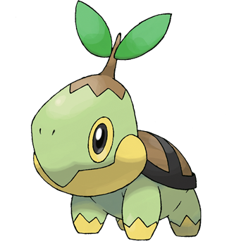

동아대학교 컴퓨터공학과 1학년 재학중입니다.
프로그래밍 분야는 본인이 계속해서 공부하고 발전해 나가야 하죠.
배운 것도 정말 적지만 아직 능숙히 다룰 줄 아는 것도 아닙니다. 그렇지만 시간이 해결해 준다는 말이 있듯이 지금은 정말 아무것도 모르고, 뭘하는지도 제대로 이해하지 못하지만 꾸준히 하다보면 언젠가는 저도 개발자가 될 수 있지 않을까라고 생각하며 노력하고 있습니다.
이제 대학교에 입학한지 3달이 다 되어갑니다. 1학년에 1학기도 끝마치지 않은 놈이 뭐 이런 고민을 하냐라고 생각하실 수 있습니다. 사실 저도 그렇게 생각하곤 합니다. 때로는 너무 깊이 고민한다고 할까요? 그래도 이런 고민이 꼭 단점만 있는 건 아니라고 생각합니다. 이런 시간을 통해 마음 속 복잡한 생각들을 한 번 정리할 수 있는거죠. 정리한다고 해서 제가 더 잘해지고 그런 건 없지만 마음이 어느정도 편안해집니다.
제가 자기소개에 이런 글을 적는 이유가 뭘까요? 음... 특별한 이유는 없고 제가 최근 가진 생각들을 이렇게 글으로 적어보는게 아무래도 좋을 것 같아 정리해보았습니다.